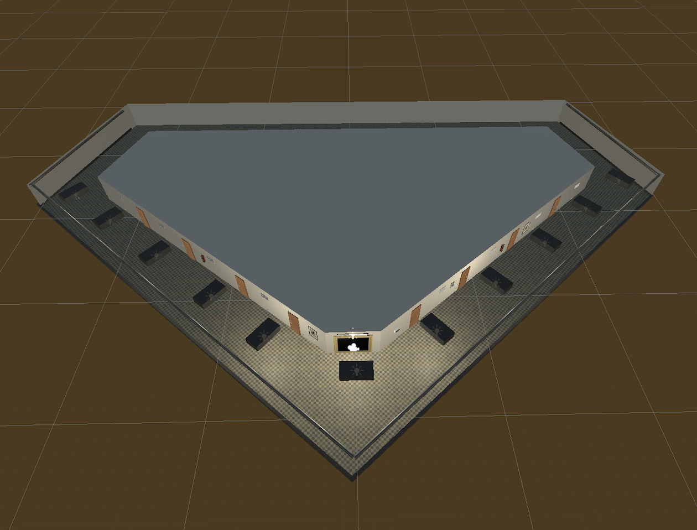
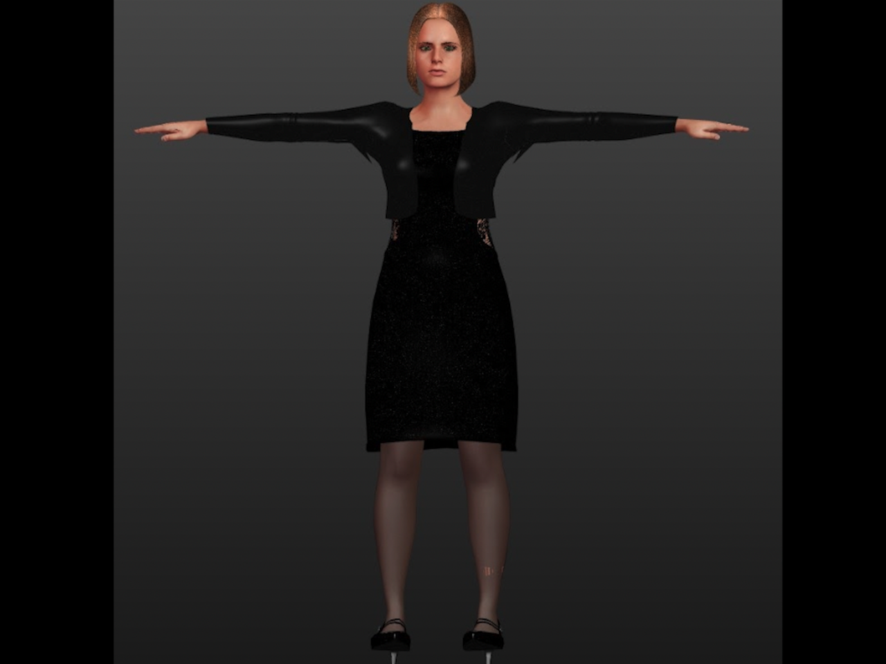
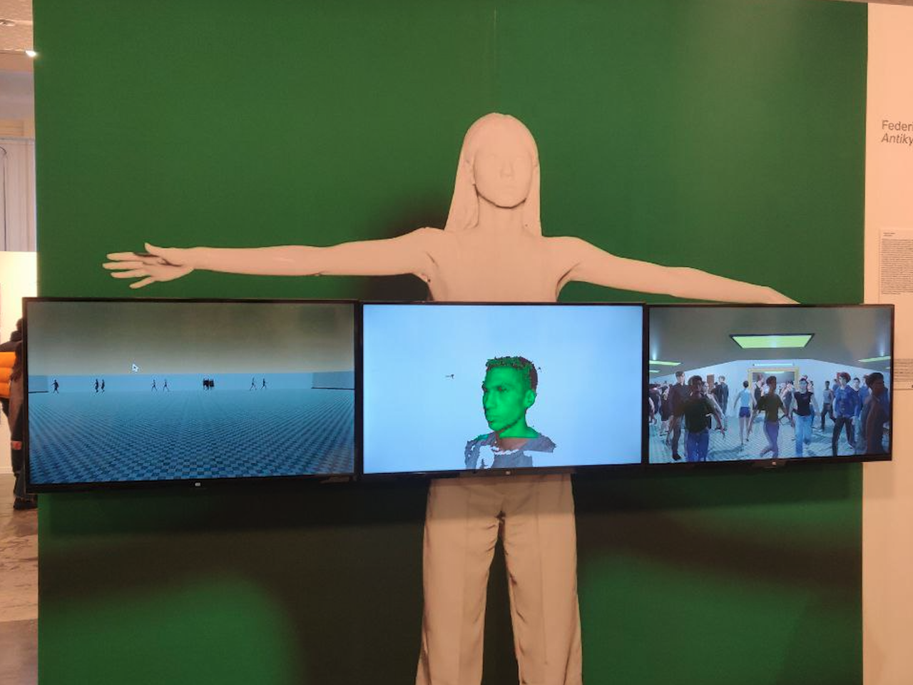
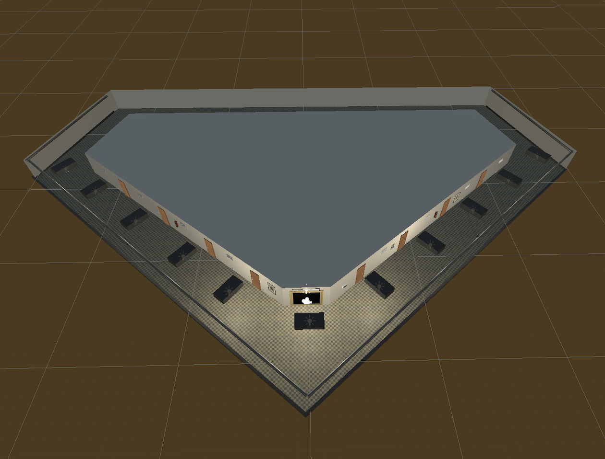
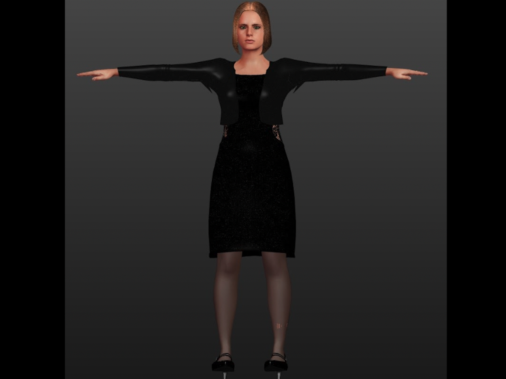
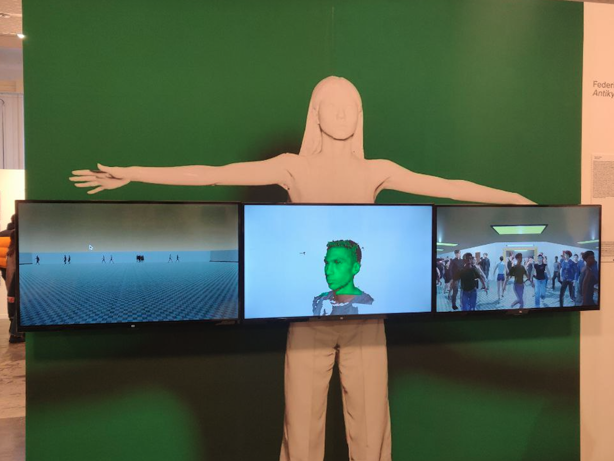

Igor • Iurevici
About
Hello world!
I'm a software developer, passionate about creating immersive digital experiences.
Constantly deep diving into the newest tech, especially XR - but also in love with mountains, pixel art and live coding music.
Projects
The ones I'm most proud of.
UEs in VR
UEs in VR explores the possibility of utilizing and improving the
User Enactments design technique by emulating it in virtual reality.
A smart home environment with realistic physics and interactions has been developed in order to explore the user perception of a
(simulated) pro-active AI system present in the house.
Divergences
Divergences is an artistic work started by the visual artist
Federica Sasso and sound designer
Luca Pagan, with the collaboration of the
Rehab Technology Lab of
Italian Institute of Technology.
The test user with a prosthetic leg is immersed in an infinite virtual corridor.
This environment features four distinct settings with different lighting and surfaces (marble, water, moquette, grass). As the user walks on a treadmill, the virtual environment dynamically adapts to their movements.
For each setup the user experiences different footsteps sounds, which are triggered by pressure-detecting devices.
The virtual environment, empowered by the sound system, aims to explore the relationship between the body, sound impulses, and the digital world.
An exhibition of the project occured at
Ars Electronica Festival 2023.
BoloFence
BoloFence is a concept of an Android touristic app for Bologna city.
The app recognizes the user mobility type (walk, bike or car) and accordingly triggers a notification when the user enters a specific area.
A dashboard collects the user path data, preserving the privacy, and provides a ML clustering tool able to detect new high-flow areas.
Embodiment
Embodiment is an avatar-based project, started by
Federica Sasso,
that raise awareness of post-pandemic social difficulties.
The user is familiarized with the new virtual body, while the
Liminal Space virtual environment
fills with a crowd of people that gradually surrounds the user.
Highlights of the experience have been exhibited at the
PhotoVogue Festival 2022, under the Antikythera name.
 





Annotator
A prototype of a document annotator for text classification developed during my internship at expert.ai. The web app aimed to improve the usability of the previous system and speed up the tagging process.